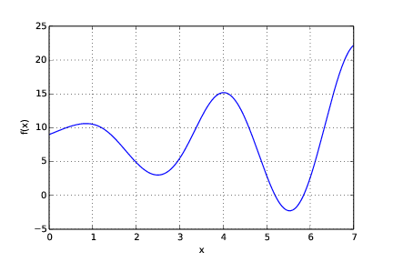

The brute force method from the section Brute force method is based on the idea of solving \( f(x)=0 \) by computing \( f \) at a large number of \( x \) points and choosing the \( x \) points where \( f(x) \) is close enough to the \( x \) axis, i.e., \( |f(x)| < \epsilon \). The problem with the method is that it finds too many solutions. A better idea is to check where \( f \) crosses the \( x \) axis.
More specifically, compute a set of evenly distributed points \( x_i=a+ih \), \( i=0,\ldots,n \), \( h=(b-a)/n \). For each pair of points, \( x_i \) and \( x_{i+1} \), check if \( f \) crosses the \( x \) axis: \( f(x_i)f(x_{i+1}) < =0 \). If so, we have a solution of the equation \( f(x) \) in the interval \( [x_i,x_{i+1}] \). We may take the midpoint of this final interval as the approximate solution. Write a program that implements this idea and test it on the same equation as in the section Brute force method.
Solution. The program may be written as:
function search_crossings_1eqn()
f = @(x) exp(sqrt(x)).*sin(2*x) + cos(x).^5 + 8;
a = 0; b = 7; n = 200;
dx = (b-a)/n;
x = linspace(a,b,n+1);
eps = 0.001;
for i = 1:n
if f(x(i))*f(x(i+1)) <= 0
x_sol = (x(i)+x(i+1))/2;
fprintf('x: %g , f_value: %g \n',x_sol,f(x_sol));
end
end
plot(x,f(x),'b-');
xlabel('x');
ylabel('f(x)');
grid('on');
end
Running the program produces the following printout:
x: 5.194157 , f_value: 0.000068
x: 5.845892 , f_value: 0.000128
and the plot of \( f(x) \) seen in Figure 61.
Figure 61: The function \( f(x) = e^{\sqrt{x}} sin(2 x) + cos^5(x) + 8 \) plotted as a function of \( x \).

Filename: search_crossings_1eqn.m.
The purpose of this exercise is to understand when Newton's method works and fails. To this end, solve \( \tanh x=0 \) by Newton's method and study the intermediate details of the algorithm. Start with \( x_0=1.08 \). Plot the tangent in each iteration of Newton's method. Then repeat the calculations and the plotting when \( x_0=1.09 \). Explain what you observe.
Solution. The program may be written as:
function [solution, no_iterations] =...
Newton_failure(f, dfdx, x0, eps)
x = x0;
f_value = f(x);
iteration_counter = 0;
while abs(f_value) > eps && iteration_counter < 100
try
fprintf('Current x vaule: %g \n', x);
plot_line(f, x, f_value, dfdx(x));
x = x - (f_value)/dfdx(x);
catch
fprintf('Error! - derivative zero for x = \n',x)
exit(1)
end
f_value = f(x);
iteration_counter = iteration_counter + 1;
end
%Here, either a solution is found, or too many iterations
if abs(f_value) > eps
iteration_counter = -1;
end
solution = x;
no_iterations = iteration_counter;
end
which may be called from the script use_my_Newton_failure.m:
f = @(x) tanh(x);
dfdx = @(x) 1 - tanh(x)^2;
[solution, no_iterations] = Newton_failure(f, dfdx, 1.08, 0.001)
if no_iterations > 0 %solution found
fprintf('Number of function calls: %d \n', 1 + 2*no_iterations);
fprintf('A solution is: %f \n', solution);
else
fprintf('Solution not found! \n');
end
Note that Newton_failure.m calls the function plot_line (located in plot_line.m),
reading:
function plot_line(f, xn, f_xn, slope)
%plot both f(x) and the tangent or secant
x_f = linspace(-2,2,100);
y_f = f(x_f);
x_t = linspace(xn-2,xn+2,10);
y_t = slope*x_t + (f_xn - slope*xn); %straight line: ax + b
figure();
plot(x_t,y_t,'r-',x_f,y_f,'b-'); grid('on');
xlabel('x'); ylabel('f(x)');
disp('...press enter to continue')
pause on; pause;
end
(The function plot_line is placed as a separate m-file so that it may be used also
by the function secant_failure, which is to be written in another exercise.)
Running the program with x set to \( 1.08 \) produces a series of plots (and prints) showing
the graph and the tangent for the present value of x. There are quite many
plots, so we do not show them here. However, the tangent line "jumps" around
a few times before it settles. In the final plot the tangent line goes through
the solution at \( x = 0 \). The final printout brings the information:
Number of function calls: 13
A solution is: 0.000024
When we run the program anew, this time with x set to \( 1.09 \), we get another series of
plots (and prints), but this time the tangent moves away from the (known) solution.
The final printout we get states that:
Number of function calls: 19
A solution is: nan
Here, nan stands for "not a number", meaning that we got no solution value for x.
That is, Newton's method diverged.
Filename: Newton_failure.*.
Does the Secant method behave better than Newton's method in the problem described in Exercise 61: Understand why Newton's method can fail? Try the initial guesses
% This file is not yet written.
which may be called from the script use_my_secant_failure.m:
f = @(x) tanh(x);
dfdx = @(x) 1 - tanh(x)^2;
%Requested trials:
%x0 = 1.08 , x1 = 1.09
%x0 = 1.09 , x1 = 1.1
%x0 = 1 , x1 = 2.3
%x0 = 1 , x1 = 2.4
[solution, no_iterations] = Secant_failure(f, 1, 2.4, 0.001)
if no_iterations > 0 %solution found
fprintf('Number of function calls: %d \n', 1 + 2*no_iterations);
fprintf('A solution is: %f \n', solution);
else
fprintf('Solution not found! \n');
end
Note that, as with Newton_failure.m, the script plot_line.m is called for
plotting each tangent.
The script converges with the three first-mentioned alternatives for \( x_0 \) and \( x_1 \). With the final set of parameter values, the method diverges with a printout:
Error! - denominator zero for x = 360.600893792
and a few more lines stating that an exception error has occurred.
Filename: Secant_failure.*.
Solve the same problem as in Exercise 61: Understand why Newton's method can fail, using the Bisection method, but let the initial interval be \( [-5,3] \). Report how the interval containing the solution evolves during the iterations.
Solution. The code may be written as:
function [result1, result2] = ...
bisection_nonfailure(f, x_L, x_R, eps)
if f(x_L)*f(x_R) > 0
fprintf('Error! Function does not have opposite \n');
fprintf('signs at interval endpoints!');
exit(1);
end
x_M = (x_L + x_R)/2;
f_M = f(x_M);
iteration_counter = 1;
while abs(f_M) > eps
left_f = f(x_L);
right_f = f(x_R);
if left_f*f_M > 0 %i.e., same sign
x_L = x_M;
else
x_R = x_M;
end
fprintf('interval: [%f, %f]\n',x_L, x_R); %print new int.v.
x_M = (x_L + x_R)/2;
f_M = f(x_M);
iteration_counter = iteration_counter + 1;
end
result1 = x_M;
result2 = iteration_counter;
end
which may be called from the script use_my_bisection_nonfailure.m:
f = @(x) tanh(x);
a = -5; b = 3;
[solution, no_iterations] =...
bisection_nonfailure(f, a, b, 1.0e-6);
fprintf('Number of function calls: %d\n',1 + 2*no_iterations);
fprintf('A solution is: %f\n',solution);
Running the program produces the following printout:
interval: [-1.000000, 3.000000]
interval: [-1.000000, 1.000000]
Number of function calls: 7
A solution is: 0.000000
Filename: bisection_nonfailure.*.
An attractive idea is to combine the reliability of the Bisection method with the speed of Newton's method, even if the potential divergence with Newton's method then still is an issue. Such a combinations is implemented by running the Bisection method until we have a narrow interval, and then switch to Newton's method for speed.
Write a function that implements this idea. Start with an interval \( [a,b] \) and switch to Newton's method when the current interval in the Bisection method is a fraction \( s \) of the initial interval (i.e., when the interval has length \( s(b-a) \)). The value of \( s \) must be given as an argument to the function, but it may have a default value of 0.1.
Try the new method on \( \tanh(x)=0 \) with an initial interval \( [-10,15] \).
Solution. The code may be written as:
function [solution, no_iterations] = ...
bisection_Newton(f, dfdx, x_L, x_R, eps, s)
f_L = f(x_L);
if f_L*f(x_R) > 0
fprintf('Error! Function does not have opposite');
fprintf('signs at interval endpoints!');
exit(1);
end
x_M = (x_L + x_R)/2;
f_M = f(x_M);
iteration_counter = 1;
interval_Newton = s*(x_R - x_L); %limit for swith to Newton
while (x_R - x_L) > interval_Newton
if f_L*f_M > 0 %i.e. same sign
x_L = x_M;
f_L = f_M;
else
x_R = x_M;
end
x_M = (x_L + x_R)/2;
f_M = f(x_M);
iteration_counter = iteration_counter + 1;
end
[x, no_iter] = Newton(f, dfdx, x_M, eps);
solution = x;
no_iterations = iteration_counter + no_iter;
end
which may be called from the script use_my_bisection_Newton.m:
f = @(x) tanh(x);
dfdx = @(x) 1 - tanh(x)^2;
eps = 1e-6;
a = -10; b = 15;
s = 0.1;
[solution, no_iterations] =...
bisection_Newton(f, dfdx, a, b, eps, s);
fprintf('A solution x = %f was reached in %d iterations \n',...
solution,no_iterations);
Running the program produces the following printout:
A solution x = 0.000000 was reached in 7 iterations
Filename: bisection_Newton.m.
Write your own version of the Bisection method in a program applied to the following problem.
Assume a straight line defined as \( y = 2x - 4 \) on the interval \( [-1e6,1e6] \). Write a program that uses the Bisection method to find approximately where that line crosses the \( x \) axis. Include a printout of middle_x for each iteration of the while loop. Use the same error limit as in the original program. Run the program and confirm that the answer is correct.
Filename: straight_line_crossing.m.
Write the program Newtons_method.m as given in the text. Run the program and confirm that you get the same output. Then, inside the function Newton, as a new (extra) last line of the try block, insert a statement for printing the value of x to screen.
Before you next run the modified program, follow the two first iterations of the while loop by hand, and write down the values of x that will be printed to screen. Finally, run the modified program and compare with your predictions.
Filename: Newton_hand.m.
Hint. In c, consider how you would solve it with pen and paper.
a) Write your own version of Newton's method in a program applied to the following problem. Consider \( f(x) = x^2 \) and \( g(x) = 2x + 40 \) on the interval \( [-10,10] \). Write a program that uses Newton's method to find approximately where the two graphs cross. Let the staring value for Newton's method be user input to the program. Your program should also plot the two graphs together in the same plot for comparison with computations. Run the program two times, using \( 10 \) and \( -10 \) as input starting values, respectively. Do the computed solutions appear reasonable? Explain briefly.
b) What starting value can not be used in your program? Explain briefly.
c) Explain briefly (i.e., no coding required) how you might use Newton's method to find the (non-usable) starting value considered in b.
Filename: intersecting_graphs_Newton.m.
Write a program that uses Newton's method to find all solutions to \( sin(x) = 0 \) on the interval \( [0,4\pi] \) during a single execution of the program.
Let your program use \( 40 \) evenly distributed starting values on the interval. For each starting value, print the solution found to the screen. Also, let your program plot \( sin(x) \) on the interval. After execution, count the number of different solutions found and compare with the graph. Did your program find all the solutions (including the endpoints)? In the sequence of solutions printed to screen, why do some of the previously found solutions get printed again? Explain briefly.
Hint.
Call Newton's method in a for loop that iterates \( 40 \) times.
Filename: finding_many_solutions.m.
Consider \( x^2 = 9 \) on the interval \( [0,1000] \). Write a program that solves the equation by first using four iterations with the Bisection method (to reduce the interval) before switching to Newton's method for the final calculations.
Use the midpoint of the interval as starting value for Newton's method. The program should print to the screen each new interval found by the Bisection method, and also each new \( x \) produced by Newton's method.
Filename: combining_bisection_Newton.m.
Write a program that measures the CPU time spent on \( 100000 \) solves done by Newtons_method.m. Do the implementation in the same way as illustrated in bisection_method_with_timing.m and compare CPU times from the two methods. Explain briefly your observations.
Filename: timing_Newton.m.
Consider the equation \( sin(x) = \frac{-20}{e^{0.5x}} \) on the interval \( [0,10] \).
a) The equation will have one solution on the given interval. Write a program that solves the equation with Newton's method, letting the starting value be user input to the program. Your program should print each new estimate of the solution as Newton's method proceeds. Also, let your program generate a relevant plot so that you see graphically where the solution is located.
Run your program first with \( 0 \) as your starting value. What do you observe? Explain briefly.
Then run again, now with \( 10 \) as your starting value. Explain briefly what you observe.
b) You observed in a that the choice of starting value was critical. Suggest another method that would have avoided this problem.
Filename: problematic_starting_value.m.
Write the program secant_method.m as given in the text. Run the program and confirm that you get the same output. Then, inside the function secant, as a new (extra) last line of the try block, insert a statement that prints the value of x to screen.
Before you next run the modified program, follow the two first iterations of the while loop by hand, and write down the values of x that will be printed to screen. Finally, run the modified program and compare with your predictions.
Filename: secant_hand.m.
Write your own version of the secant method in a program applied to the following problem.
Consider \( f(x) = x^2 \) and \( g(x) = 2x + 40 \) on the interval \( [0,10] \) only. Write a program that uses the secant method to find approximately where the two graphs cross. Use x1 = 10 and x2 = 9 as your two starting values and print each new \( x \) value to the screen.
Let your program plot the graphs of \( f(x) \) and \( g(x) \) in the same coordinate system, allowing you to judge the finding of your program. Run the program. Is the computed solution consistent with the plot?
Filename: intersecting_graphs_secant.m.
Write a program that uses Newton's method for several equations to solve
$$
\begin{align}
sin(x) = y - 2 , \nonumber \\
y = e^x ~. \nonumber
\end{align}
$$
Use \( x = 4.0 \) and \( y = 4.0 \) as your starting values and let your program plot the relevant graphs on the interval \( [-3.0,3.0] \). Compare briefly the solution of your program with the plot.
Filename: two_nonlinear_equations.m.
Consider solving \( x^3 + 2x = e^{-x} \) on the interval \( [-2,2] \).
Note that the equation may be rewritten as \( x = \frac{e^{-x} - x^3}{2} \), where the left and right hand sides can be defined as \( f(x) \) and \( g(x) \), respectively. There is only one solution to the equation, and it may be regarded as that \( x \) value where the graphs of \( f(x) \) and \( g(x) \) intersect.
Hint. The method applied here is called fixed point iterations. In d), use Internet to find relevant information, e.g., Wikipedia.
a) Write a program that iteratively uses \( x = \frac{e^{-x} - x^3}{2} \) to update x, starting with \( x = 1 \). Do this by use of a for loop with, e.g., \( 20 \) iterations and print the value of \( x \) to the screen with each iteration. Your program should also plot \( f(x) \) and \( g(x) \) on the interval in the same coordinate system. Compare the computations with the plot. Does your program find the solution?
b) Modify the starting value to \( x = -0.5 \) and run your program again. Does your program find the solution?
c) Do as in b), but use starting value \( x = -2 \) first, and then \( x = 2 \). Does your program find the solution now?
d) Whether you get convergence or not is related to the characteristics of \( g(x) \). Try to come up with a criterion that assures convergence (you might like to try even more starting values than those from above).
Filename: fixed_point_iteration.m.